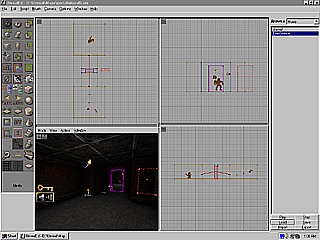

UnrealEd Tutorial 5 - Adding Sound and
Music by Cableless
This tutorial is a
simple one. Adding sound and music to an Unreal level
is easy using the Browser.
Download the map for this Tutorial and install it in
your C:\UNREAL\MAPS directory.
Adding an Ambient Sound

In the Browse
window select Classes.
In the Browse
window, click on the "-" next to Keypoint
to expand the list.
In the Browse
window select Ambient Sound.
Right Click
where you want to place the Ambient Sound
and select Add Ambient Sound Here.
You should see a key with a speaker icon
attached appear in the Perspective
window.
Right Click
on the Ambient Sound and select Ambient
Sound Properties.
In the Ambient
Sound Properties window select Sound.
In the Ambient
Sound Properties window select Ambient
Sound.
In the Browse
window select SoundFX.
In the Browse
window under SoundFX select General.
Select Load
at the bottom of the Browse window.
Select AmbAncient.uax
and click Open.
In the Browse
window select adrips4.
In the Ambient
Sound Properties window select Ambient
Sound.
In the Ambient
Sound Properties window next to Ambient
Sound select Use.
Close the Ambient
Sound Properties window.
Under the Options
menu at the top of the screen select Rebuild.
Save your level!
Adding a Sound to Your Door
Right Click
on the edge of your mover and select
Mover Properties.
In the Mover
Properties window select MoverSounds.
In the Browse
window select SoundFX.
In the Browse
window beneath SoundFX select General.
Select Load
at the bottom of the Browse window.
Select DoorsAnc.uax
and click Open.
In the Browse
window beneath DoorsAnc select Stone.
In the Browse
window select sdoorS4.
In the Mover
Properties window select ClosingSound.
In the Mover
Properties window next to ClosingSound
select Use.
In the Browse
window select sdoorS1.
In the Mover
Properties window select OpeningSound.
In the Mover
Properties window next to
OpeningSound select Use.
Close the Mover
Properties window.
Under the Options
menu at the top of the screen select Rebuild.
Save your level!
Adding Music to your Level
In the Browse
window select Music.
Select Load
at the bottom of the Browse window.
Select EverSmoke.umx
and click Open.
Under the Options
menu at the top of screen select Level
Properties.
In the Level
Properties window select Audio.
In the Level
Properties window select Song.
In the Level
Properties window next to Song select
Use.
Close the Level
Properties window.
Under the Options
menu at the top of the screen select Rebuild.
Save your level!
Select Play
Level under the File menu at
the top of the screen.